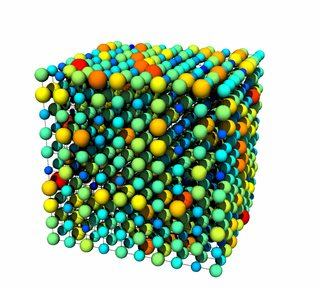
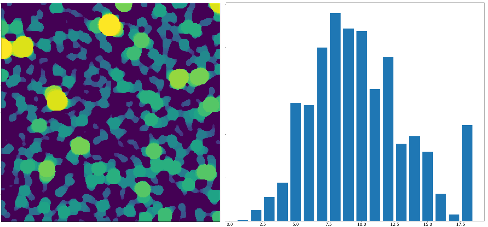
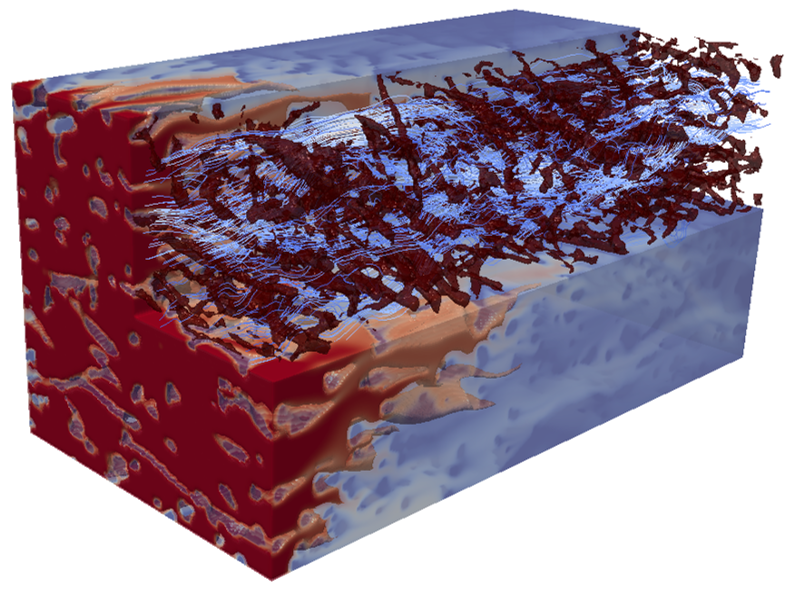
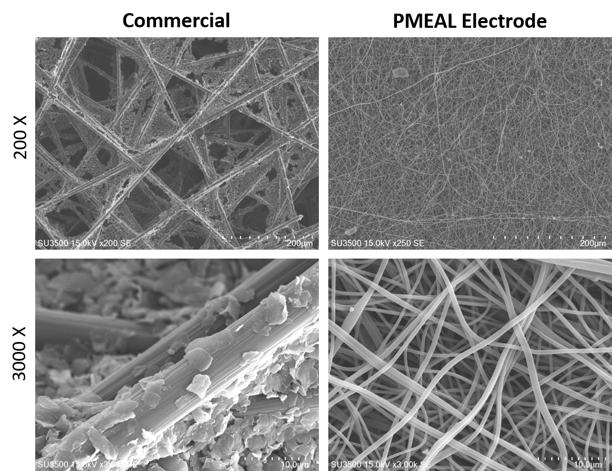
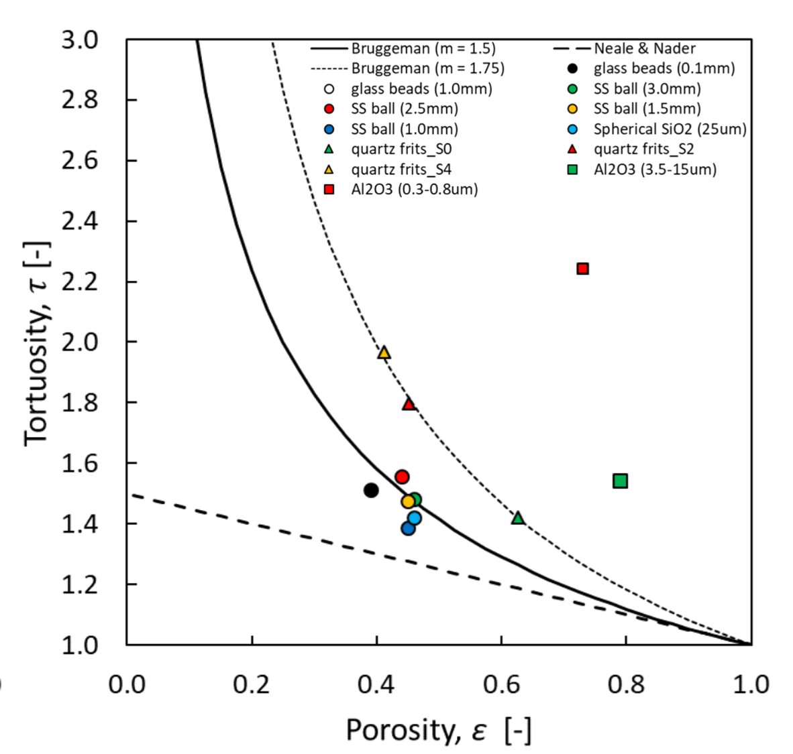

Research#
In the Porous Materials Engineering and Analysis Lab (PMEAL) we study structural and transport properties of non-conventional porous media. By non-conventional media, we refer to materials other than rock and soil which have long been the focus of porous media researchers looking at oil recovery and aquifer management. Non-conventional materials, on the other hand, include electrodes, filters, thin porous films, tissue scaffolds, nanoporous catalysts, and phase segregated polymers. These atypical materials present many new challenges, from simple problems like designing suitable sample holders, to philosophical questions like whether the continuum approximation is satisfied when modeling transport in a layer that is only 10 pores thick. The research cycle in the PMEAL Group involves measuring structural characteristics and transport properties, modeling the transport phenomena in devices to predict performance, and then actually making optimized materials based on the results of the previous steps. Brief examples of each step are given below.
Model#

The PMEAL group is the lead developer of the OpenPNM package for performing pore network modeling of porous materials. This package is now fairly mature and is being used by a number of research groups around the world. OpenPNM has been awarded multiple grants from CANARIE to enhance the packagr.

We are also the lead developers of PoreSpy, a collection of functions for measuring various properties of tomography images of porous materials (i.e. volumetric images). This project uses Python and other open source tools, rather than relying on proprietary software. This image shows the pore-size function of the image obtained by inscribing successively smaller spheres in the void space and assigning voxels to the largest engulfing sphere.

Direct numerical simulation on 3D voxel-based images is becoming increasingly common as computers can handle ever larger data sets, and X-ray tomography devices become more widely available. PMEAL is involved in modeling of reaction and transport directly in the voxel-domain using tools such as the Lattice-Boltzmann method. This work interleaves closely with our PoreSpy package, and is complimentary to OpenPNM. This image shows an ionic solution flowing through a fibrous electrode and undergoing a electrochemical reaction at the fiber surfaces that depletes the reactant concentration (red) far before the outlet.
Make#

Electrospinning is an old technique that is seeing new life in the past decade due to its ability to make a very wide range of interesting fibrous materials. PMEAL has been utilizing this technique to produce optimized electrodes for flow batteries. Compared to commercially available materials, the target material has smaller fibers for increased surface area and high porosity to enhance the permeability. This image shows commercial materials with 10 um diameter fibers, compared to our electrospun materials with 1 um diameter fibers. The much smaller fiber size has shown to be highly advantageous for in-situ flow battery performance, as outlined in our recent publication.
Measure#
One of the ongoing challenges when studying novel, atypical, or non-conventional porous materials is a lack of standard tools for measuring their structural and transport properties. The porous media literature is filled with solutions for rock cores and sandpacks, but must less has been done toward studying layers of material only 100 um thick, 90% porosity, composed of highly aligned fibers, and so on. The PMEAL Group has a strong track record developing novel experimental protocols and tools for such situations. We recently report a method for measuring effective diffusivity (i.e. tortuosity) using a radial sample holder that requires no sealing gaskets, allowing it’s use on very thin thin layers.
